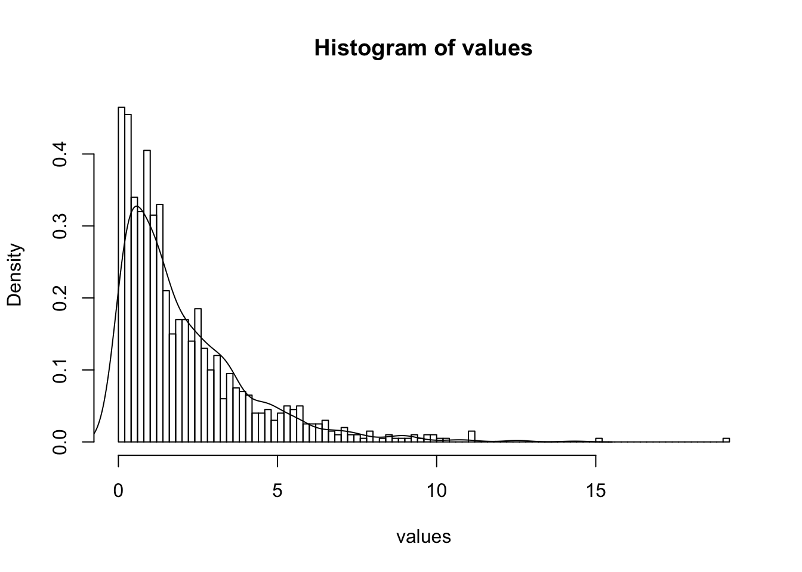

5 Trabalho 1
5.1 Exerc?cio 1
- Considere que uma variável continua \(X\) com a seguinte função de densidade: \[ f(x) = \left\{ \begin{array}{ll} \frac{4}{3}(x^3 + x) \quad \qquad 0 < x < 1\\ 0, \qquad \qquad \qquad\text{for all others } x \text{ values}\\ \end{array} \right. \]
Agora considerando a variavel aliatória \(Y = g(X)\), em que \(g(x) = log(x^2 + 4)\). Estime o valor \(P(1.3 < Y < 1.5)\) usando o método de monte carlo e estime o valor do desvio padrão da estimativa
\[ P(1.3 < Y < 1.5) \quad = \quad P(1.3 < g(x) < 1.5) \] \[ D(g(x))=D(log(x^2+4))=[min(log(x^2+4),+ \infty[ \quad , \quad min(log(x^2+4))=log(4)=1.386294>1.3 \] Onde \(D(g(x))\) é o dominio de \(g(x)\). Uma vez que \(D(g(x))\) está definido no intervalo \([min(log(x^2+4),+ \infty[\) afimar o seguinte:
\[ P(1.3<g(x)<log(4))=0 \quad \implies \quad P(1.3<g(x)<1.5)\equiv P(log(4)<g(X)<1.5) \]
Que se pode desenvolver :
\[ P(log(4) < log(x^2 + 4) < 1.5) \quad = \quad P(4 < x^2 + 4 < e^{1.5}) \quad = \quad P(0 < x^2 < e^{1.5}-4) \quad = \quad P(0 < x < \sqrt{e^{1.5}-4}) \]
Agora, sabemos que a probabilidade que queriamos calcular pode ser obtida através do seguinte integral:
\[ \int_{0}^{\sqrt{e^{1.5}-4}} \frac{4}{3}(x^3 + x) dx \] O qual puderá ser escrito com a seguinte mudança de variável:
5.1.1 Mudança de variável
\[ z(x)=xc \quad ,\quad z(\sqrt{e^{1.5}-4})=1 \quad \implies c=\frac{1}{\sqrt{e^{1.5}-4}} \] \[ x=z\sqrt{e^{1.5}-4} \quad \implies \quad x'=\sqrt{e^{1.5}-4} \]
No que resulta no seguinte integral:
\[ \int_{0}^{\sqrt{e^{1.5}-4}} \frac{4}{3}(x^3 + x)dx \quad \equiv \quad \frac{4}{3}\int_{0}^{1} ((z\sqrt{e^{1.5}-4})^3 + z\sqrt{e^{1.5}-4}).\sqrt{e^{1.5}-4} \;dz \equiv \frac{4}{3}(e^{1.5}-4)\int_{0}^{1} (z^3(e^{1.5}-4) + z).1 \; dx \] Onde pudemos usar o método de monte carlo para estimar \[\int_{0}^{1} (z^3(e^{1.5}-1) + z).1 \; dx\] , assumindo que \(z\) segue uma distribuição \(U(0,1)\). \[ \int_{0}^{1} (z^3(e^{1.5}-4) + z).1 \; dx\quad \approx \quad \hat{\theta} =\frac{\sum_{i=1}^{n}(z_i^3.(e^{1.5}-4)+z_i)}{n} \]
Calculo do estimador \(\hat{\theta}\) do valor esperado do integral anterior.
int_func <- function(z){
res=(z^3)*(exp(1.5)-4)+z
}
#z follows an uniform
sample <- runif(1000)
int_est <- mean(int_func(sample))
prob_value <- (4/3)*(exp(1.5)-4)*int_estAssim sendo:
\(P(1.3<x<1.5)\quad=\quad\) 0.3937988
5.1.2 Cálculo do desvio padrão do estimador da probabilidade
\[ var(P(1.3<Y<1.5)) \quad = \quad \left(\frac{4}{3}(e^{1.5}-4)\right)^2.var(\theta) \]
varEstimator <- (1/(length(sample)^2))*sum(((4/3)*(exp(1.5)-4)*int_func(sample)-prob_value)^2)
df <- data.frame(
probEstimated = prob_value,
stdMC = sqrt(varEstimator)
)
knitr::kable(df)| probEstimated | stdMC |
|---|---|
| 0.3937988 | 0.0085771 |
5.2 Exercise 2
5.2.1 2.1
\[E(e^{x+y})=E(e^{x}+e^{y})\]
Sendo:
\[E(X)=\int_D \mathrm{x.f(x)}\,\mathrm{d}x\], onde \(\mathrm{X}\) é uma variável aletória e \(\mathrm{f(x)}\) a sua função densidade de probabilidade.
Temos:
\[\int_0^\infty\int_0^\infty\mathrm{e}^{x+y}.\frac{2}{\sqrt{2\pi}}.\mathrm{e}^{\frac{-x^{2}}{2}}.\frac{2}{\sqrt{2\pi}}.\mathrm{e}^{\frac{-y^{2}}{2}}\,\mathrm{d}x\mathrm{d}y \quad = \quad \frac{2}{\pi}\int_0^\infty\int_0^\infty\mathrm{e}^{x}.\mathrm{e}^{\frac{-x^{2}}{2}}.\mathrm{e}^{y}.\mathrm{e}^{\frac{-y^{2}}{2}}\,\mathrm{d}x\mathrm{d}y\]
Fazendo as seguintes mudanças de variável:
\[\alpha=\mathrm{e}^{-x}\implies x=-log(\alpha)\] \[\beta=\mathrm{e}^{-y}\implies y=-log(\beta)\]
Ficamos com os seguintes limites de integração para \(\alpha\):
\[\displaystyle\lim_{x \to \infty}\mathrm{e}^{-x} = 0\] \[\displaystyle\lim_{x \to 0}\mathrm{e}^{-x} = 1\]
e para \(\beta\):
\[\displaystyle\lim_{x \to \infty} \mathrm{e}^{-y} = 0\] \[\displaystyle\lim_{x \to 0} \mathrm{e}^{-y} = 1\]
Substituindo na equação, temos:
\[\frac{2}{\pi}\int_1^0\int_1^0\mathrm{e}^{-log(\alpha)}.\mathrm{e}^{\frac{-(-log^{2}(\alpha))}{2}}.(-\frac{1}{\alpha}).\mathrm{e}^{-log(\beta)}.\mathrm{e}^{\frac{-(-log^{2}(\beta))}{2}}.(-\frac{1}{\beta})\mathrm{d}\alpha\mathrm{d}\beta\] \[ =\frac{2}{\pi}.(-\int_0^1\mathrm{e}^{-log(\alpha)}.\mathrm{e}^{\frac{-(-log^{2}(\alpha))}{2}}.\frac{1}{\alpha}\mathrm{d}\alpha).(-\int_0^1\mathrm{e}^{-log(\beta)}.\mathrm{e}^{\frac{-(-log^{2}(\beta))}{2}}.\frac{1}{\beta}\mathrm{d}\beta)\] \[=\frac{2}{\pi}.\int_0^1\mathrm{e}^{-log(\alpha)}.\mathrm{e}^{\frac{-log^{2}(\alpha)}{2}}.\frac{1}{\alpha}\mathrm{d}\alpha\int_0^1\mathrm{e}^{-log(\beta)}.\mathrm{e}^{\frac{-log^{2}(\beta)}{2}}.\frac{1}{\beta}\mathrm{d}\beta\] \[=\frac{2}{\pi}.\int_0^1\mathrm{e}^{-log(\alpha).(1+\frac{1}{2}log(\alpha))}.\frac{1}{\alpha}\mathrm{d}\alpha.\int_0^1\mathrm{e}^{-log(\beta).(1+\frac{1}{2}log(\beta))}.\frac{1}{\beta}\mathrm{d}\beta\] \[=\frac{2}{\pi}.\int_0^1\mathrm{e}^{-log(\alpha).(1+\frac{1}{2}log(\alpha))}.\frac{1}{\alpha}.1\mathrm{d}\alpha.\int_0^1\mathrm{e}^{-log(\beta).(1+\frac{1}{2}log(\beta))}.\frac{1}{\beta}.1\mathrm{d}\beta\] \[=\frac{2}{\pi}.\int_0^1\mathrm{e}^{-log(\alpha).(1+\frac{1}{2}log(\alpha))}.\frac{1}{\alpha}.\frac{1}{1-0}\mathrm{d}\alpha.\int_0^1\mathrm{e}^{-log(\beta).(1+\frac{1}{2}log(\beta))}.\frac{1}{\beta}.\frac{1}{1-0}\mathrm{d}\beta\]
Sendo:
\[h_1(\alpha)=\mathrm{e}^{-log(\alpha).(1+\frac{1}{2}log(\alpha))}.\frac{1}{\alpha}.\frac{1}{1-0}\] \[g_1(\alpha)=\mathrm{e}^{-log(\alpha).(1+\frac{1}{2}log(\alpha))}.\frac{1}{\alpha}\] \[f_1(\alpha)=\frac{1}{1-0}\] \[h_2(\beta)=\mathrm{e}^{-log(\beta).(1+\frac{1}{2}log(\beta))}.\frac{1}{\beta}.\frac{1}{1-0}.\] \[g_2(\beta)=\mathrm{e}^{-log(\beta).(1+\frac{1}{2}log(\beta))}.\frac{1}{\beta}\] \[f_2(\beta)=\frac{1}{1-0}\]
Onde:
\[f_1(\alpha),f_2(\beta)\sim\mathcal{U}(1,0)\]
e,
\[f_1(\alpha),f_2(\beta)\geq0\]
Estamos em condições de aplicar Monte Carlo:
\[ \begin{cases} \theta_1=\int_Dh_1(\alpha)\mathrm{d}\alpha=\int_Dg_1(\alpha).f_1(\alpha)\mathrm{d}\alpha=E(g_1(X)) \\\theta_2=\int_Dh_2(\beta)\mathrm{d}\beta=\int_Dg_2(\beta).f_2(\beta)\mathrm{d}\beta=E(g_2(Y)) \end{cases} \]
Se tivermos uma amostra aleatória \(x_1,...,x_n\) da variavél aleatória \(X\) com densidade \(f\), um estimador \(\theta\) é:
\[ \begin{cases} \hat{\theta_1}=\sum\limits_{i=1}^n \frac{g_1(x_i)}{n} \\\hat{\theta_2}=\sum\limits_{i=1}^n \frac{g_2(y_i)}{n} \end{cases} \]
Finalmente:
\(\hat{E(e^{x+y})}=\hat{\theta}=\frac{2}{\pi}.\hat{\theta_1.}\hat{\theta_2}\)
A variância de \(\hat\theta\) será:
\(v=Var(\frac{2}{\pi}.\hat{\theta_1.}\hat{\theta_2})=\frac{4}{\pi^2}.Var(\hat{\theta_1}).Var(\hat{\theta_2})\)
Aplicando o método de Monte Carlo, ficamos com:
\[ \begin{cases} \hat Var(\hat{\theta_1})=\frac{1}{n^2}\sum\limits_{i=1}^n (g_1(x_i)-\hat{\theta_1})^2 \\\hat Var(\hat{\theta_2})=\frac{1}{n^2}\sum\limits_{i=1}^n (g_2(y_i)-\hat{\theta_2})^2 \end{cases} \]
Substituindo na equação inicial:
\[ \hat v=\frac{4}{\pi^2}.\sum\limits_{i=1}^n \frac{(g_1(x_i)-\theta)^2}{n}.\sum\limits_{i=1}^n \frac{(g_2(y_i)-\theta)^2}{n} \]
5.2.2 Implementação do método:
5.2.2.1 Determinação do estimador e do estimador da variância
set.seed(1)
n<-1000
u1<-runif(n)
u2<-runif(n)
g1<-function(x){exp(-log(x)*(1+(1/2)*log(x)))*(1/x)}
g2<-function(y){exp(-log(y)*(1+(1/2)*log(y)))*(1/y)}
teta<-(2/pi)*mean(g1(u1))*mean(g2(u2))
teta1<-mean(g1(u1))
teta2<-mean(g2(u2))
v<-(4/(pi^2))*(mean((g1(u1)-teta1)^2)/n)*(mean((g2(u2)-teta2)^2)/n)
df <- data.frame(
probEstimated = teta,
varianceMC = v
)
knitr::kable(df)| probEstimated | varianceMC |
|---|---|
| 7.874321 | 8.3e-06 |
5.2.3 2.2
Dado que:
\[ X, Y \text{ random variables with p.d.f.:} \quad \]
\[ f(x) = \frac{2}{sqrt(2\pi)}e^{-\frac{x^2}{2}} \quad , 0 < x < +\infty \]
precisamos de estimar o par?metro \(\theta\) com o método de Monte Carlo utilizando uma variável que não seja Uniforme, onde o parâmetro \(\theta\) é definido como:
\[ \theta = E(e^{X+Y}) \]
5.2.4 Trabalhar o estimador
\[ \theta = E(e^{X+Y}) \quad = E(e^X \times e^Y) \quad = E(e^X) \times E(e^Y) \]
\[ = \int_{0}^{+\infty} e^x \frac{2}{\sqrt{2\pi}} e^{-\frac{x^2}{2}} dx \times \int_{0}^{+\infty} e^y \frac{2}{\sqrt{2\pi}} e^{-\frac{y^2}{2}} dy \]
Este integral n?o as condições para o método de Monte Carlo ser aplicado, e portanto é necessário trabalhar o integral de maneira a que seja possível aplicar o método.
5.2.5 Mudança de variável
Ao aplicar a seguinte mudança de variável:
\[ x = \varphi(t) = \sqrt{t} \]
\[ t = \varphi^{-1}(x) = x^2 \]
\[ \varphi'(t) = (\sqrt{t})' = (t^\frac{1}{2})' = \frac{1}{2}t^{-\frac{1}{2}} \]
\[ \lim_{t \to +\infty} \sqrt{t} = +\infty \]
\[ \lim_{t \to 0} \sqrt{t} = 0 \]
podemos reorganizar o integral da seguinte maneira:
\[ x = \varphi(t) = t_x \quad, y = \varphi(t) = t_y \]
\[ \int_{0}^{+\infty} e^{\sqrt{t_x}} \frac{2}{\sqrt{2\pi}} e^{-\frac{1}{2}t_x} \frac{1}{2}t_x^{-\frac{1}{2}} dt_x \times \int_{0}^{+\infty} e^{\sqrt{t_y}} \frac{2}{\sqrt{2\pi}} e^{-\frac{1}{2}t_y} \frac{1}{2}t_y^{-\frac{1}{2}} dt_y \]
Re-ordenando a equação, estamos agora em condições de aplicar o método de Monte Carlo uma vez que o integral é definido pela multiplicação de:
- uma p.d.f. \(f(x)\) conhecida
- uma outra função \(g(x)\)
\[ \int_{0}^{+\infty} e^{\sqrt{t_x}} \frac{2}{\sqrt{2\pi}} t_x^{-\frac{1}{2}} \frac{1}{2}e^{-\frac{1}{2}t_x} dt_x \times \int_{0}^{+\infty} e^{\sqrt{t_y}} \frac{2}{\sqrt{2\pi}} t_y^{-\frac{1}{2}} \frac{1}{2} e^{-\frac{1}{2}t_y} dt_y \]
onde:
\[ g(x) = e^{\sqrt{x}} \frac{2}{\sqrt{2\pi}} x^{-\frac{1}{2}} \quad \text{and} \quad f(x) = \frac{1}{2} e^{-\frac{1}{2}x} \]
onde \(f(x)\) é a função distribuição densidade de uma variável Exponencial com \(\lambda = \frac{1}{2}\):
\[ X \sim Exp( \frac{1}{2}) \]
Portanto, é agora necessário gerar amostras aleatórias de \(X \sim Exp(\frac{1}{2})\)
5.2.6 Gerar uma variável com distribuição Exponencial utilizando o método da Transformação Inversa
Comecemos com a função distribui??o cumulativa de uma variável Exponencial, que é definida por: \[ F(X) = 1 - e^{-\lambda x}, \quad x \in \mathbb{R} \]
Tendo em consideração que o resultado de \(F(X)\) é um número real entre 0 e 1, e que:
- \(F(X)\) ? uma função monótona não decrescente
- \(F(X)\) ? uma função cont?nua
? sabido que \(F(X)\) ? invert?vel.
5.2.7 Implementação do método
set.seed(1)
lambda <- 0.5
N <- 1000
samples <- runif(N)
inverseExp <- function(u, lambda){
-(1/lambda)*log(1-u)
}
values <- inverseExp(samples, lambda)
hist(values, breaks=100, freq = F)
lines(density(rexp(1000,0.5)))
g <- function(x){
exp(sqrt(x))*(2/(sqrt(2*pi)))*x^(-1/2)
}
X <- runif(N)
Y <- runif(N)
EX <- mean(g(inverseExp(X, lambda)))
EY <- mean(g(inverseExp(Y, lambda)))
theta2 <- EX*EY
vEX <- (1/(N^2))*sum((g(inverseExp(X, lambda))-EX)^2)
vEY <- (1/(N^2))*sum((g(inverseExp(Y, lambda))-EY)^2)
vtheta <-vEX*vEY
df <- data.frame(
probEstimated = theta2,
varianceMC = vtheta
)
knitr::kable(df)| probEstimated | varianceMC |
|---|---|
| 7.901322 | 2.4e-06 |
5.2.8 2.3
\(\hat{\theta}\) = \(E(e^{x+y})\) \(var(\hat{\theta})= \frac{4}{\pi^2}.\sum\limits_{i=1}^n \frac{(g_1(x_i)-\hat{\theta})^2}{n}.\sum\limits_{i=1}^n \frac{(g_2(y_i)-\hat{\theta})^2}{n}\)
novo estimador:
\(\hat{\theta_c}\quad=\quad \hat{\theta}-\beta.(c-\mu)\)
\(E(C)\quad=\quad\mu\) \(var(\hat{\theta_c}) = var(\hat{\theta})+\beta^2.var(C)-2\beta cov(\hat{\theta},C)\)
Queremos minimazar a variância, minimizando a variável \(\beta\): para tal derivamos \(var(\hat{\theta_c})\) em ordem a \(\beta\) o que resulta na expressão: \(var(\hat{\theta_c})'=2\beta var(C) - 2cov(\hat{\theta},C)\)
Com \(var(\hat{\theta_c})'=0\) iremos obter os extremos. \(\beta=\frac{-2cov(\hat{\theta},C)}{2var(C)}\)
Calculo auxiliares: \[ b)\quad \quad \quad var(\hat{\theta})=Var\left(\frac{2}{\pi}.(\hat{\theta_1}.\hat{\theta_2})\right)=\frac{4}{\pi^2}.Var(\hat{\theta_1}).Var(\hat{\theta_2}) \]
\[ E(C)=E\left(\frac{1}{n}.\sum_{i=0}^n u_i\:v_i \right)= \frac{1}{n}\sum (E(u).E(v))=E(u).E(v) =\int_0^1 u \: du.\int_0^1 v \:dv \] \[ var(C)= \frac{1}{n}.\left(\int_0^1f_c(x)^2-E(C)^2)\right) \]
\[ Cov(\hat{\theta},C)= cov \left(\frac{1}{n}\sum_{i=1}^n g(U_i,V_i),\frac{1}{n}\sum_{i=1}^n U_i,V_i \right)= \] \[ = \frac{1}{n^2}\sum_{i=1}^n cov \left( g(U_i,V_i), U_i,V_i \right) -\sum_{i=1}^n\sum_{j=1}^ncov \left( g(U_i,V_i), U_jV_j \right)= \] Como os indices \(i \neq j\) então\(g(U_i,V_i)\) será independente de \(U_i V_i\) e a sua covariância será Zero.
\[ = \frac{1}{n^2}\sum_{i=1}^n cov \left( g(U_i,V_i), U_i,V_i \right)-0= \] \[ =\frac{1}{n}(E(g(U,V))UV))-\frac{\theta}{4n} \]
\[ E(g(U,V))UV)= \int_0^{1}\int_0^{1}uv.g(u,v)\:du\:dv \] que será estimado em r pelo método de monte carlo
kk=1
res_final <- data.frame(integer(), double(), double(), double(), double())
n <- 10
while(kk<6) {
if(kk!=1) {
if(kk%%2!=0)
n<-n*2
else
n<-n*5
}
set.seed(1)
u1<-runif(n)
u2<-runif(n)
g1<-function(x){exp(-log(x)*(1+(1/2)*log(x)))*(1/x)}
g2<-function(y){exp(-log(y)*(1+(1/2)*log(y)))*(1/y)}
teta1<-mean(g1(u1))
teta2<-mean(g2(u2))
teta<-(2/pi)*mean(g1(u1))*mean(g2(u2))
teta_var<-(4/(pi^2))*((mean((g1(u1)-teta1)^2))/n)*((mean((g2(u2)-teta2)^2))/n)
df <- data.frame(
probEstimated = teta,
varianceMC = teta_var
)
g1_b<-function(x){exp(-log(x)*(1+(1/2)*log(x)))}
g2_b<-function(y){exp(-log(y)*(1+(1/2)*log(y)))}
covar_tc<-((1/n^2)*mean(g1_b(u1)*g2_b(u2)*u1*u2))-teta/(4*n^2)
c_var<-(7/(n*144))
beta<-covar_tc/(c_var)
tetac<-(teta - (beta*((1/4) - mean(u1*u2))))
tetac_var<-(teta_var+(beta^2)*c_var-2*beta*covar_tc)
res<-data.frame(n, teta, teta_var, tetac, tetac_var)
res_final<-rbind(res_final,res)
kk<-kk+1
}
knitr::kable(res_final)| n | teta | teta_var | tetac | tetac_var |
|---|---|---|---|---|
| 10 | 7.114578 | 0.0728507 | 6.962646 | 0.0401382 |
| 50 | 7.444414 | 0.0024827 | 7.432106 | 0.0021721 |
| 100 | 7.604431 | 0.0006777 | 7.598763 | 0.0006353 |
| 500 | 7.839631 | 0.0000307 | 7.839400 | 0.0000303 |
| 1000 | 7.874321 | 0.0000083 | 7.874559 | 0.0000083 |